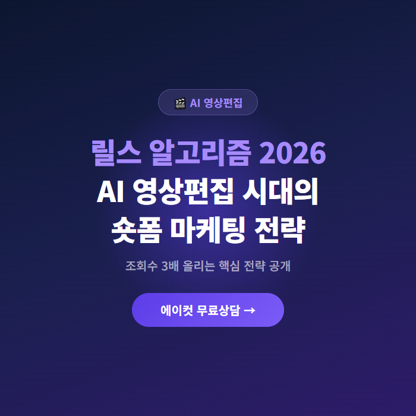
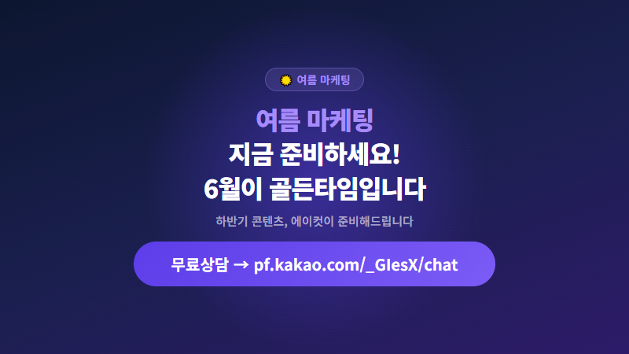

2026년 6월, 인스타그램 릴스 알고리즘이 또 한 번 크게 바뀌었습니다.
더욱이 6월은 2026 월드컵이 한창인 시즌 — 전 세계인의 이목이 축구장에 쏠려 있습니다.
더 이상 '좋아요' 수나 팔로워 수가 콘텐츠 노출을 결정하지 않습니다.
릴스 알고리즘 2026의 핵심은 완전 시청률(100% View-Through Rate)과 재시청 비율입니다.
사용자가 영상을 끝까지 보는 비율이 높을수록, 같은 영상을 반복 시청할수록 알고리즘이 해당 콘텐츠를 '고품질'로 판단합니다.
더 많은 사용자에게 노출되는 구조입니다.
이는 AI 영상편집의 중요성을 더욱 높이고 있습니다.
단순 편집이 아닌, 시청자 이탈을 막는 전략적 편집이 필수인 시대입니다.
숏폼 마케팅은 더 이상 선택이 아닌 필수 마케팅 채널이 되었습니다.
2026년 상반기 데이터에 따르면, 숏폼 콘텐츠의 사용자 참여율은 일반 피드 콘텐츠 대비 평균 3.7배 높습니다.
특히 6월 여름 마케팅 시즌에 월드컵 열기가 더해졌습니다.
스포츠 관련 숏폼 콘텐츠의 소비량이 폭발적으로 증가하고 있습니다.
경기 하이라이트, 선수 인터뷰, 응원 영상 등 월드컵 콘텐츠는 릴스와 쇼츠에서 가장 빠르게 확산되는 장르입니다.
축구 팬들을 타겟으로 한 브랜디드 콘텐츠, 응원 릴스, 경기 리액션 영상 — 이 모든 것이 숏폼 마케팅의 새로운 기회입니다.
패션·뷰티·여행·외식 업종도 예외가 아닙니다.
월드컵 시즌을 맞아 해당 업종의 릴스 노출량이 급증하고 있습니다.
| 플랫폼 | 최적 길이 | 알고리즘 핵심 |
|---|---|---|
| 인스타 릴스 | 15~30초 | 완전 시청률 |
| 유튜브 쇼츠 | 30~60초 | 좋아요율 |
| 틱톡 | 15~60초 | 재시청+공유율 |
2026년 현재, AI 기반 영상편집 툴이 빠르게 발전하고 있습니다.
자막 자동 생성, 배경 제거, 음성 더빙까지 AI가 처리하는 시대가 왔습니다.
하지만 여전히 전문 에디터의 역할이 중요한 이유가 있습니다.
AI 영상편집 툴이 할 수 없는 것 — 브랜드 톤앤매너의 일관성 유지, 시청자 심리를 고려한 편집 타이밍, 시즌별 마케팅 전략에 맞춘 스토리텔링입니다.
AI는 도구일 뿐, 전략적 방향성은 사람이 설정해야 합니다.
에이컷은 AI 영상편집 기술을 적극 활용하되, 최종 편집은 경력 5년 이상의 전문 에디터가 직접 수행합니다.
AI의 효율성과 사람의 감각을 결합한 하이브리드 편집 방식으로 업계에서 가장 합리적인 가격에 최상의 퀄리티를 제공합니다.
에이컷이 2026년 상반기 자체 분석한 데이터, 정기적으로 릴스를 발행한 기업의 평균 계정 도달률은 일반 계정 대비 214% 높았습니다.
특히 주 3~4회 이상 꾸준히 발행한 계정의 팔로워 증가율은 주 1회 이하 발행 계정 대비 5.8배 차이가 났습니다.
하지만 매일 콘텐츠를 기획·촬영·편집하는 것은 내부 마케터만으로는 한계가 있습니다.
바로 이 지점이 영상편집 아웃소싱이 필요한 이유입니다.
영상 1편 편집에 평균 3~5시간 소요됩니다.
아웃소싱 시 마케터는 전략과 기획에 집중할 수 있습니다.
내부 편집은 업무 과다로 퀄리티가 일정하지 않습니다.
전문 에디터에게 맡기면 항상 일정한 퀄리티를 유지할 수 있습니다.
릴스 알고리즘은 계속 변하고, 숏폼 트렌드는 빠르게 바뀝니다.
전문 편집 업체는 최신 트렌드를 지속 학습하므로 대응이 빠릅니다.
6월은 상반기 마감과 하반기 준비가 동시에 이루어지는 중요한 시기입니다.
특히 2026년 6월은 월드컵이 더해져 그 어느 때보다 콘텐츠 소비량이 높습니다.
여름 마케팅 콘텐츠에 월드컵 응원·스포츠 요소를 더하면 바이럴 효과는 배가됩니다.
경기 일정에 맞춰 실시간 반응 영상, 승리 세리머니 편집, 응원 릴스 등 월드컵 숏폼 콘텐츠를 미리 제작해두고 적시에 발행하는 기업이 승리합니다.
에이컷의 월 정기 구독 서비스를 이용하면 월드컵 시즌 마케팅 영상을 사전 제작해두고 전략적 타이밍에 발행할 수 있습니다.
번거로운 편집 일정 관리에서 벗어나 전략적 콘텐츠 기획에 집중하세요.
월드컵이 끝난 후에도 남은 여름 시즌, 그리고 하반기까지 안정적인 콘텐츠 발행이 가능합니다.
영상편집 아웃소싱으로 숏폼 마케팅의 효과를 극대화하고 싶다면, 지금 바로 에이컷에 문의하세요.
카카오톡 상담: pf.kakao.com/_GIesX/chat
이메일: master@aicut.co.kr
홈페이지: aicut.co.kr

해시태그
#릴스알고리즘 #릴스 #AI영상편집 #숏폼마케팅 #영상편집 #영상편집아웃소싱 #에이컷 #여름마케팅 #월드컵 #월드컵마케팅 #축구영상 #인스타그램릴스 #틱톡마케팅 #유튜브쇼츠 #영상제작 #영상편집업체 #마케팅전략 #SNS마케팅 #숏폼콘텐츠 #릴스마케팅 #AI마케팅 #스포츠숏폼 #하반기준비 #릴스조회수 #인스타그램알고리즘 #영상마케팅 #콘텐츠마케팅 #디지털마케팅 #비즈니스릴스 #영상외주